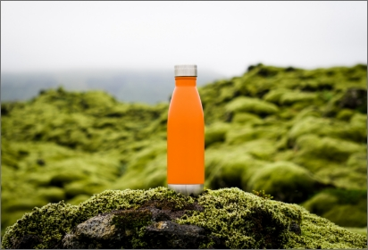

Quench
QU3NCH! is the latest craze in the beverage industry, and it's no surprise why. This unique drink was created by a young entrepreneur named Sarah Smith, who saw a need for a more refreshing and hydrating option on the market.